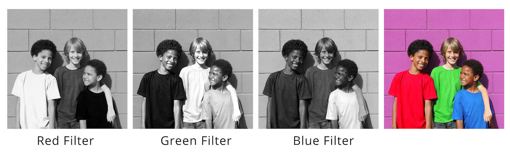

Coloring the Universe


Nearly everything astronomers know about the stars and galaxies in the Universe comes from the light we receive from these objects. Fortunately, that light contains a wealth of information. In this investigation, you will learn how astronomers use light and filters to understand things such as distant galaxies, dusty nebulae, and types of stars.
There are many types of electromagnetic radiation: radio waves, infrared, visible, ultraviolet (UV), X-rays, etc. Astronomers refer to all of these types of radiation as light. Each type of light has a specific range of wavelengths and energies. The type of light we can see with our eyes is called “visible” light.

Figure 1: the Electromagnetic Spectrum. Adapted from https://imagine.gsfc.nasa.gov/Images/science/EM-spectrum-full.jpg
Visible light consists of all of the colors of the rainbow, as shown below. You may have learned the acronym “Roy G. Biv” to remember the seven colors of the rainbow. The different colors correspond to different wavelengths and energies. Within the range of light we can see, red light has the lowest energy and the longest wavelengths; violet has the highest energy and the shortest wavelengths.
Digital cameras cannot see color. They can only measure the amount of light that illuminates the image sensor. To build a color image, we use filters. A filter is designed to allow only certain wavelengths (or colors) of light to pass through it. All other wavelengths (or colors) are blocked. Figure 2a shows an example of how an orange filter transmits some wavelengths of light while blocking others.
There are filters like this inside a digital camera (e.g., the one on a mobile phone). Tiny red, green, and blue filters are placed over the pixels of the image sensor as shown below in Figure 3b. When you take a picture, your camera measures light simultaneously through all three filters.


Figure 3a: Orange filter. Credit: P. Marenfeld (NOAO/AURA/NSF). Figure 3b: Diagram of an image sensor with filter arrangement. Credit.
To better understand how filters work, try out the filter tool below:
prism
white light →
Looking at a rainbow you might think that we need to use (at least) seven filters to produce a color image. But we actually only need three. This is because our eyes contain sensors called “cones” that collect red, green, and blue light. Our brain has a method for transforming the relative amounts of red, green, and blue light measured by the cones into a color image. This is known as the “three-color process.” Remarkably, our eyes can see over a million different colors with this method. Now let’s explore how the three-color process works.
Below there is a series of images. The first three are images obtained using red, green, and blue filters. As we mentioned before, digital cameras cannot see color, so each of the three images of filtered light starts out as a black and white image. A color (red, green, or blue) is then selected to colorize each of the filtered images, and finally, the three images are combined to create the color image.
Start by looking at the brightness of the boys’ shirts in the black and white images taken through each filter. Think about what is similar and what is different in them.
Figure 4: Comparison of the light passed by filters.
| Bright or dark? | Red shirt | Green Shirt | Blue Shirt |
|---|---|---|---|
| Red Filter | |||
| Green Filter | |||
| Blue Filter |
Look for a pattern in the answers in the table above.
“The red shirt looks (bright/dark) in the image taken through the red filter because the red filter (passes/blocks) red light.”
“The green shirt looks (bright/dark) in the image taken through the red filter because the red filter (passes/blocks) green light.”
Here are the same images, now colorized with their corresponding color, and the resulting image in full color:

Figure 5: Assignment of colors to filters.
The same image appears in the color-mixing tool below.
People often wonder if astronomical images show an object “as it really looks,” that is, as it would appear to their eyes. Note that telescopes not only magnify distant objects, they also collect much more light than your eyes. Most astronomical objects would be too faint for you to see, even if you were much closer to them than you are on Earth.
Furthermore, telescope images are often made by using light with wavelengths that your eyes can’t see. This invisible light is collected by passing it through a filter that transmits a specific range of wavelengths. For instance, an ultraviolet filter (u filter) transmits light with wavelengths that are “above violet” and too high in energy for our eyes to see. Likewise, infrared filters transmit light with wavelengths that are “below red” and too low in energy for our eyes to see. Astronomers use these extra filters because each type of light reveals different information about the universe, so observing light over all these wavelengths allows us to learn more about objects in space. In a sense, telescopes give us superhuman vision. Indeed that’s the reason we build them!
Uses of astronomical filtersThe LSST camera contains six filters (Figure 6), identified by the letters u, g, r, i, z and y. Three of these filters (g, r, and i) transmit visible light our eyes can see. The u filter transmits ultraviolet light. The z and y filters transmit only infrared light.

Figure 6: Comparison of visible color wavelength ranges with LSST filters (nm = nanometers)
As already mentioned, ultraviolet and infrared light are beyond the range of human vision. However, astronomers can still make images with these filters by colorizing the filtered images with colors we can see. Different filters are used to highlight certain objects or areas of interest. Here are some examples:
Infrared filters: Seeing through dustOne of the uses of infrared filters is to see through dust, which scatters light with shorter wavelengths but transmits light with longer wavelengths.
Figure 7 below displays images from three filters and a full-color image. Before combining the filtered images they had to be colorized. The u filter image was colorized blue, the g filter image was colorized green, and the y (infrared) filter image was colorized red. (There’s a particular reason that these colors are arranged in this order—more on this later.)

Figure 7: Ghost Nebula images from the HST WFC3/UVIS/IR data from MAST and the Hubble Legacy Archive. Each filtered image was colorized and combined to make the color image on the right.
Some galaxies are very distant, so distant that their light, because of cosmological redshift is detectable only at infrared wavelengths.
To quickly spot the most distant galaxies, a color composite image can be made using at least one infrared filter. The image obtained using the filter that transmits the light with the shortest wavelengths is colorized blue, and the one using the filter that transmits the light with the longest (infrared) wavelengths is colorized red. The color image in Figure 8 below was made by combining all three filtered images and shows the most distant galaxies in a very red color, because they are brightest at very long wavelengths.
Identify a distant galaxy in the three black and white images below (Figure 8). It will get brighter as the filter wavelengths get longer. Then look for it in the color image. Can you find it?

Figure 8: Galaxy HSC J021838–052023, from the Subaru HSC Data Release 1 DAS Quarry. The filters were colorized as described above, then combined to make the color image on the right
Visible light filters: Exploring Spiral GalaxiesActive star-forming regions can be identified in spiral galaxies. They appear as fuzzy patches of gas that glow brightly in r filtered images due to light emitted by hydrogen, but are dimmer in shorter wavelengths (u and g filters).
Hot young stars are very bright when imaged with the u and g filters, but dimmer when imaged with the longer wavelengths (r and i). By combining three or more filters, images such as those in Figure 9, can be produced that highlight different astronomical objects and structures.

Figure 9: NGC 3982 is a spiral galaxy showing areas of active star formation and hot, young stars. Image credit: NASA, ESA, and the Hubble Heritage Team (STScI/AURA); Acknowledgment: A. Riess (STScI)
Color in astronomical imagesThere is a deliberate method for the way astronomers choose colors when building a color image. It is called chromatic ordering. Each color represents light with a range of wavelengths, and colors are selected following the order of wavelength. These images are not simply pretty pictures—they communicate scientific information about specific details in the image. Astronomers know how to interpret the colors to gain scientific knowledge. Images constructed by using chromatic ordering are known as representative color images.
The chromatic ordering technique matches the light with the shortest wavelengths collected by the telescope to the color with the shortest wavelength, and continues increasing the wavelength of the color as we increase the wavelength of the captured light. Since the LSST u filter passes light with the shortest wavelengths, images obtained with that filter would be colorized violet because violet has the shortest wavelengths of visible light. The g filter transmits light with slightly longer wavelengths than the u filter, so the g filter image would be colorized blue, since blue is the next shortest wavelength color. Continuing on with this process, the images obtained with other LSST filters would be colorized in this pattern:
| r filter -> green | i filter -> yellow | z filter -> orange | y filter -> red |
|---|
Sometimes images from all six filters are not all available. In that case, a few colors are omitted, and the images can be colorized with any colors as long as they follow the chromatic order rule. For example, suppose you have a set of images taken using only these filters: g, r, i, and y.
Any of the following filter sequences would be a correct application of chromatic ordering:
| g | r | i | y |
|---|---|---|---|
| violet | green | yellow | red |
| blue | yellow | orange | red |
| blue | green | yellow | orange |
To practice this technique, let’s use images taken with the six LSST filters to create a color image with the Astronomical Image Coloring Tool. It works in a similar way to the RGB mixing tool. We will use it to explore an image of M33, a spiral galaxy.
You will now see a full color image of M33, made by combining the light from these six filters. For this image the sliders are automatically positioned so that the colors are properly balanced (in other words, you don’t see too much of one color.)
Now let’s see what happens when you move the sliders.
Move the slider next to the “g” filter all the way to the right.
Move the slider next to the “g” filter back to its original location (so that the image looked as it did before you moved it). Now move the slider next to the “r” filter all the way to the left.
Move the slider next to the “r” filter back to its original location (so the image looks as it did before you moved it.)
At this point you may be thinking: but how do I know when an image looks “correct”? The good news is that there are many ways to construct an image that combines a pleasing aesthetic with a science message. Below are three different images of M33:

Figure 10: Three different images of M33. From left to right, Fig.10a: Combined Spitzer/GALEX data, NASA/JPL-Caltech; Fig. 10b: Collective image obtained with the contributions of: Paolo Demaria, Giuseppe Donatiello (composition and processing), Marco Favuzzi, Terenzio Fusco, Rolando Ligustri, Alessandro Elio Milani, Zlatko Orbanic, Andrea Pistocchini, and Tim Stone. Creative Commons CCO 1.0; Fig. 10c: Image by Francesco Antonucci, Creative Commons 4.0 international.
These three images are different from each other because they were made with different telescopes, using different filters. They were also produced with different color balances.
You’ll know you’re done when your image conveys the features you wish to display, is in chromatic order, and looks good to you.
Now it’s your turn to create a representative color image and use it to answer a question.
Think about these points before you begin:
Here are some options:
To get started:
Be sure to save/print your image!
{kind=link}
_(18235295964).jpg){kind=link}
{kind=link}